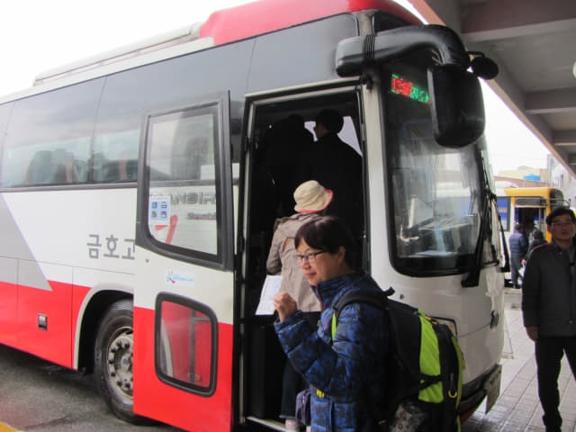

在餐廳吃完午餐, 海南所有行程也宣佈提早全部完結, 接著是乘長途巴士往下一個停留城市 — 順天 (Suncheon), 也是我們這旅程的第十個停留城市。在最初計劃行程路線時, 原本是打算先往寶城, 然後才順道一直移動往順天, 這樣便不用從順天回頭往寶城遊覽, 浪費了兩程車費和時間, 但可惜在網上查不到海南往寶城的巴士, 又不敢肯定海南往順天和釜山的巴士會在寶城停靠, 最後唯有先往順天, 但從路線來看, 真是十分愚蠢。
因我們原本的計劃是傍晚才乘巴士往海南, 所以出發前只準備了以下海南往順天的下午時刻表。看看手錶, 時間約下午一時二十分, 所以打算乘下午 14:40 的巴士班次往順天。
海南 → 順天綜合巴士客運站 (순천 종합버스터미널) (兩小時三十分) W13,200
14:40 / 15:05 / 16:30 / 17:25 / 19:00
離開餐廳, 步行往 moa Motel 服務台取回行, 再次感謝酒店服務員小姐的熱心幫助, 接著步行往海南綜合巴士客運站。
從酒店步行一會便抵達海南綜合巴士客運站, 走到售票處, 售票小姐告訴我們下午 1:55 有巴士往順天, 當然最好啦, 不用在巴士站大堂呆等一小時。車票每位是 13,200韓元, 十分昂貴。
買了車票, 離開車還有半小時, 便在海南綜合巴士客運站大堂內閒逛。過了一會, 往順天的長途巴士於下午一時五十分駛來4號月台靠站。登上了巴士, 乘客不多, 十分舒適。

巴士準時在下午一時五十五分駛離海南綜合巴士客運站, 就這樣結束了海南的短暫行程。
沿途一直下著大雨, 開始擔心順天的天氣會否一樣。想起兩年前在順天逗留了四天, 其中三天都是下雨, 而且有兩天更是傾盆大雨, 這次不會歷史重演吧! 但昨晚看了順天的天氣預測, 也不能不令我們擔心 — 未來幾天都是下雨! 唯有不斷安慰自己, 天氣預測一般都是不準確的!
巴士沿途停了很多站, 我一直都留意巴士站的名稱, 和巴士站的外貌, 主要是想知道巴士會否在寶城停靠, 因為從路線來看, 巴士肯定會經過寶城這地方, 而且沒理由不停靠這城市的。但窗外一片迷濛, 加上窗上的雨點和滾動的雨水, 很難看清楚巴士站的外貌。
當巴士越往東走, 雨勢越大, 當巴士靠站時, 已經無法看到窗外的巴士站外貌, 唯有靠巴士屏幕上所顯示的巴士站名稱。
寶城長途汽車客運站 (보성 버스터미널)
約下午三時, 看見巴士屏幕顯示即將抵達「보성」寶城站時, 便肯定了我的想法是對的! 巴士真的會在寶城停靠! 沒辦法, 已安排了順天的住宿。當巴士在寶城站停靠時, 連忙看看窗外, 正下著傾盆大雨, 只隱約看到寶城巴士站的輪廓。

離開寶城長途汽車客運站後, 巴士繼續行程, 接著又停靠了幾個站。
順天綜合巴士客運站 (순천 종합버스터미널)
下午三時五十七分, 巴士屏幕顯示下一站是「순천」順天站, 經過兩小時的車程, 終於到達順天。
巴士約下午四時抵達順天綜合巴士客運站, 行車時間約兩小時。我們在順天會住宿四晚, 其中一天會往寶城大韓茶園 (대한다원)遊覽, 所以打算先查詢了往寶城長途汽車客運站 (보성 버스터미널) 的巴士時刻才步行往旅館。

下了車, 走進售票大堂, 抬頭重覆看了車站內的巨型時刻表很久,都看不到「보성」寶城這兩個符號, 便往巴士站內的咨詢中心問問, 職員懂英文的, 更正了我們幾次寶城 (BOSING)的韓語正確發音後, 接著告訴我們: 「時刻表上的是終點站, 因為寶城是中途站, 所以是看不到的, 但不用擔心, 很多巴士路線都會停留寶城, 班次十分頻密, 來到巴士站買車票便可以了。」

其實當我在計劃路線時, 已經知道巴士路線只提供出發站和終點站, 所以在 Naver 是查詢不到巴士中途站的時刻表的! 這正是策劃韓國旅遊路線的最大困難, 寶城長途汽車客運站便是一個很好的例子!